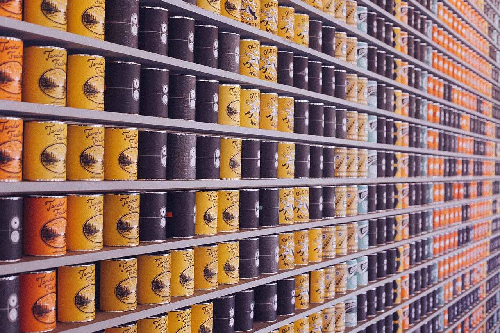

Here are some ways to help your local homeless population:

1. Host a food drive to collect canned items for homeless people to eat.
2. Create care packages with toiletry and clothing items homeless people need.
3. Donate toys to homeless parents who can’t afford to buy them for their kids.
4. Collect school supplies for homeless kids in need.
5. Volunteer at soup kitchens to help serve meals to homeless people.
6. Educate those around you about homelessness.
☛ Hover over each sentence to display a new image ☚ ☛ Click each sentence to display a new image ☚
» Facts from the Coalition for the Homeless «